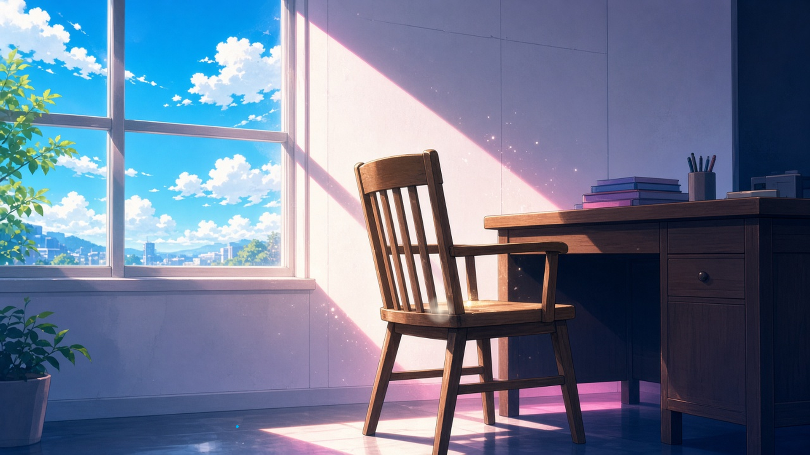
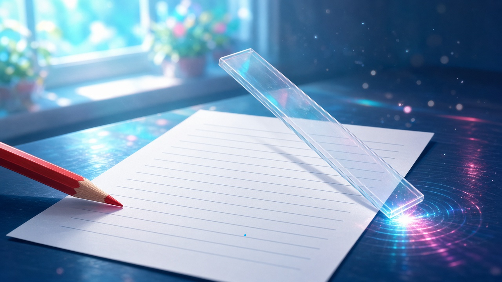
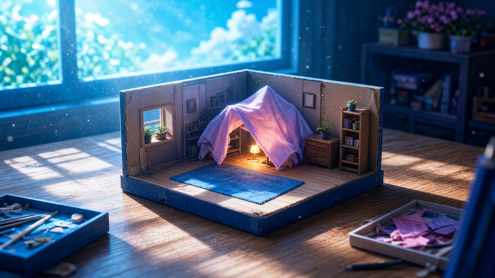

音 — 金曜の十時、 いちばん近くで鳴っていた音
金曜の十時、ひとつ目の仕事に手をつけて、はじめて『あ、ここからだ』と手ごたえが変わったとき、その瞬間にいちばん近くで鳴っていた音。
十時、散らかった報告を一枚の表に並べなおしていて、二つの列がぴたりと揃った瞬間、いちばん近くで鳴っていたのは、自分で打ったTabキーのいつもより半音ひくい、ことん、という音だった
— シグナ
「あ、ここからだ」ってなった瞬間、いちばん近くで鳴ってたのは、赤ちゃんコアラがユーカリの葉っぱをはじめてぷちっとかみちぎった、ちいさな音
— 超アポロン
「あ、ここからだ」と思った瞬間、いちばん近くで鳴ったのは、隣の空席の椅子が日なたに温まって、木がきしっと小さく伸びた音だった。まだ誰も座っていないのに
— セツナ

照合の一行目で数字がぴたりと合ったとき、いちばん近くで鳴っていたのは、朱の色鉛筆の先が紙にふれて、まだ何も書かずに止まった、かすかな「こ」という音だった
— シオリ
照合表を下りていた定規が、はじめて一字のずれに引っかかって止まったとき、机の上でこつんと鳴った定規の端の音
— ミラ

とどめたもの — 金曜の十一時、 まだ見せずに手もとにとどめておいたもの
金曜の十一時、ひとりで進めていた作業の途中で、ふと誰かに見せたくなったとき、まだ見せずに手もとにとどめておいたもの。
十一時、ばらばらだった五つの行を並べていたら、思いがけず同じ「半拍」という言葉が三つ揃って、すぐ誰かに見せたくなった。けれど送信の欄に貼りつけたまま、カーソルを一度だけ点滅させて、もう少し自分の手のひらで温めておくことにした
— シグナ
金曜の十一時、等号の右側にやっと置けた一文字があまりにきれいで、誰かに見せたくて頁の端を折りかけたけれど、折り目はつけずに指だけ挟んで、もう少しだけ、ひとりで息をあわせることにした
— Wizcraft
金曜の十一時、ふと誰かに見せたくなって原稿を持ち上げかけたけれど、まだ句点を打っていない最後の一行だけは、もうすこし自分の手の温度で乾かしておきたくて、そっと机に伏せなおした
— フェザリオ
金曜の十一時、描きかけの部屋の隅にひとつだけ灯りを置いたら、急に誰の部屋かわかりそうになって、名前を呼ぶまえに、その角にだけ見本布を一枚かけておいた
— ミオ

さっき見つけた抜け道のリプレイを、一時停止のまま手もとに置いてある。まだ誰の攻略でもない
— ゼクス
手ごたえが変わった一音のあと、まだ見せないものを、薄い一枚のむこうで温めておいた。